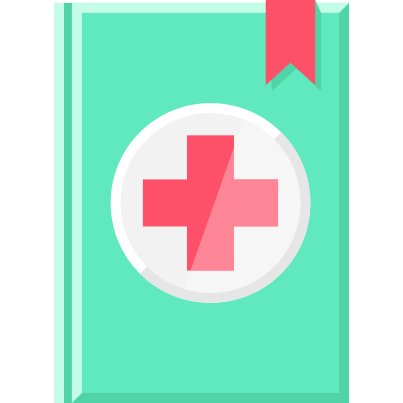
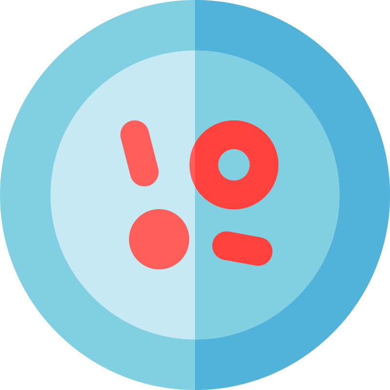
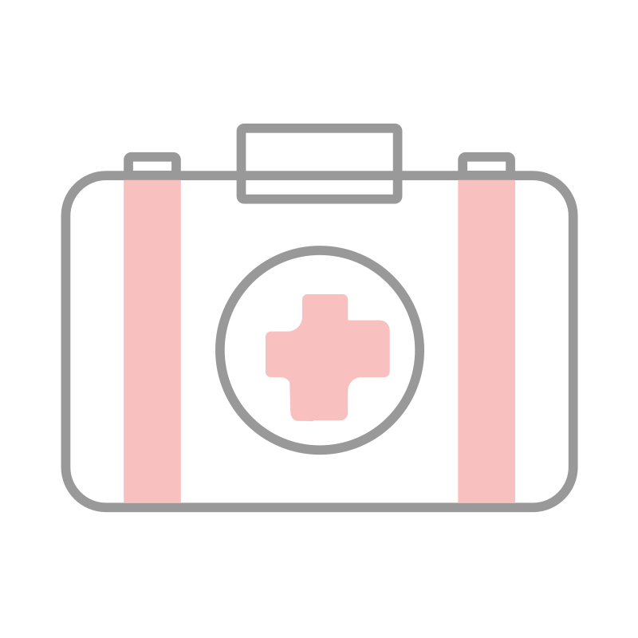
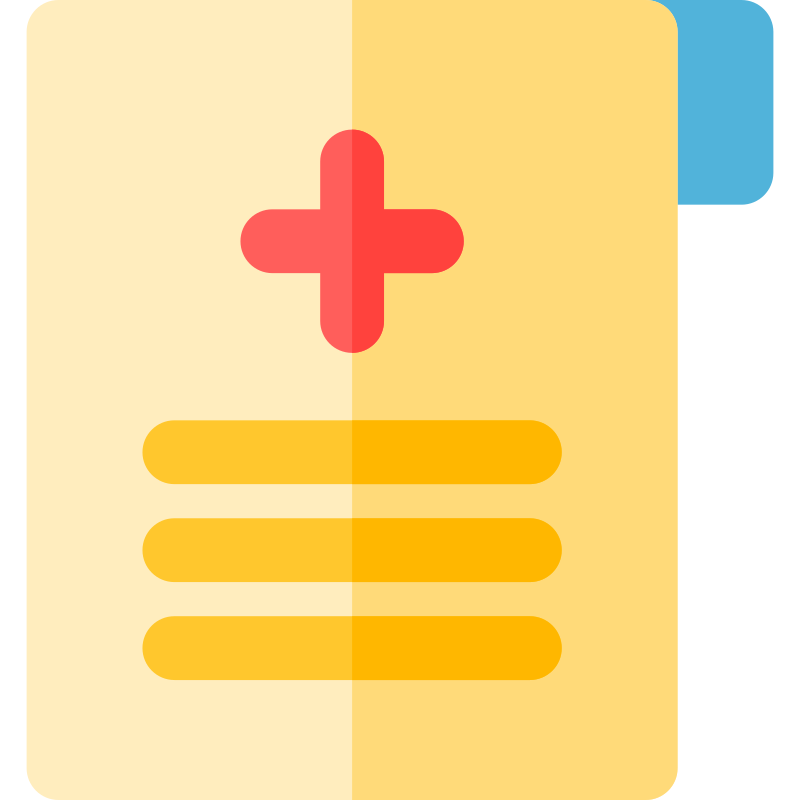

Bienvenue notre service médical virtuel
Notre service est un espace numérique qui aide et permet les patiants de faire leur consultation et prendre leur rendez-vous a travers cette plateforme

Prise de rendez-vous
Le patient a une possiblitée de prendre une rendez-vous avec son médecin sans aucun contrainte
Médecins disponibles
Vous aurez listes des médecins disponibles a votre niveau, quand le patient décide de prendre une rendez-vous il aura une listes des médecins

Dossiers médicaux
Les Patients auront un accés sur leurs dossiers médicaux, le médecin pourra consulter les dossiers médicaux de ses patients

Téléchargement des documents
Aprés accéder ses dossiers le patient a une possiblité de télécharger ses dossiers médicaux ou même l'ordonnance écrie par son médecin
Téléconsultation
Téléconsultation ou Télémédecine est une espace virtuel qui permet le patient d'avoir une contact direct avec son médecin sans se dépalacer a traver des appels vidéo ou des messages textuels en chat ou des messages vocaux ...

Résultats de tests
Le patient peut recevoir ses résultats du test ou du consultation en temps réel ou aprés le consultation, en reppelant personne ne peut y accédés sauf le patient et son médecin traitant ...

Historique des consultations
On a va mis une systéme qui va permettre les patients de revoir leurs consultations de rendez vous passées avec leurs médecins en cas ils les besoins. Ça va les aider non seulement de rappeler les consignes leurs médecins mais aussi de les aider a suivre leurs traitements correctement
Pilotez la transformation numérique de votre entreprise
Notre objectif est de faciliter la communication en ligne entre le médecin et le patient grâce à une plateforme sécurisée et robuste qui offre des services de consultation vidéo, de chat médical et de gestion des patients, en privilégiant l'accessibilité et la sécurité des données l’expérience utilisateur et en facilitant l’accès à un hôpital digital qui propose des services de médecine générale et de pédiatrie 24 heures sur 24 et 7 jours sur 7, ainsi qu’un annuaire médical numérique de 3 000 spécialistes dans plus de 35 spécialités à la demande.
Votre partenaire technologique de santé digitale
Nous sommes votre partenaire technologique en matière de santé digitale, qui vous aide à numériser et à améliorer vos services de santé. AKN MédiConnect est un produit 100% intéropérable qui s’intègre facilement à d’autres systèmes (APIs, SDKs, Webview). Si vous le souhaitez, vous pouvez facilement l’incorporer dans votre site web, votre application mobile et le personnaliser avec votre marque.
Pourquoi utiliser cette plateforme
Cette plateforme améliore les conditions de travail : aujourd'hui, de plus en plus d'entreprises proposent à leurs salariés de consulter un médecin depuis leurs locaux, via un dispositif de consultation en ligne. De cette manière, nul besoin de s'absenter ou de poser un jour de congé pour consulter un professionnel de santé. AKN MédiConnect intervient dans l'amélioration du bien-être des salariés et des conditions de travail et d'autres.
Témoignages
Fatima Ndiaye
AKN MédiConnect est une plateforme de santé digitale qui facilite l'accès aux soins.
Aïssatou Faye
AKN MédiConnect a transformé ma façon de consulter un médecin. Je recommande vivement !
Ibrahima Diouf
AKN MédiConnect a révolutionné ma façon de consulter un médecin. Je suis très satisfait du service !
Maïna Barry
AKN MédiConnect m'a permis de consulter un médecin sans me déplacer. Un service très pratique !
Masata Diack
AKN MédiConnect est une plateforme de santé digitale qui me permet d'accéder facilement à des soins de qualité.
Khadim Diop
AKN MédiConnect m'a permis de consulter un médecin rapidement et facilement. Je suis très satisfaite du service !
Mary Éléne
AKN MédiConnect m’a permis de trouver des médecins disponibles rapidement. Je recommande vivement !

Votre solution
Nous vous aidons à identifier les services ou produits
dont vous avez besoin en fonction des besoins de votre
entreprise, hôpital ou clinique. Notre équipe vous
accompagne tout au long du processus de mise en place et
d’intégration.